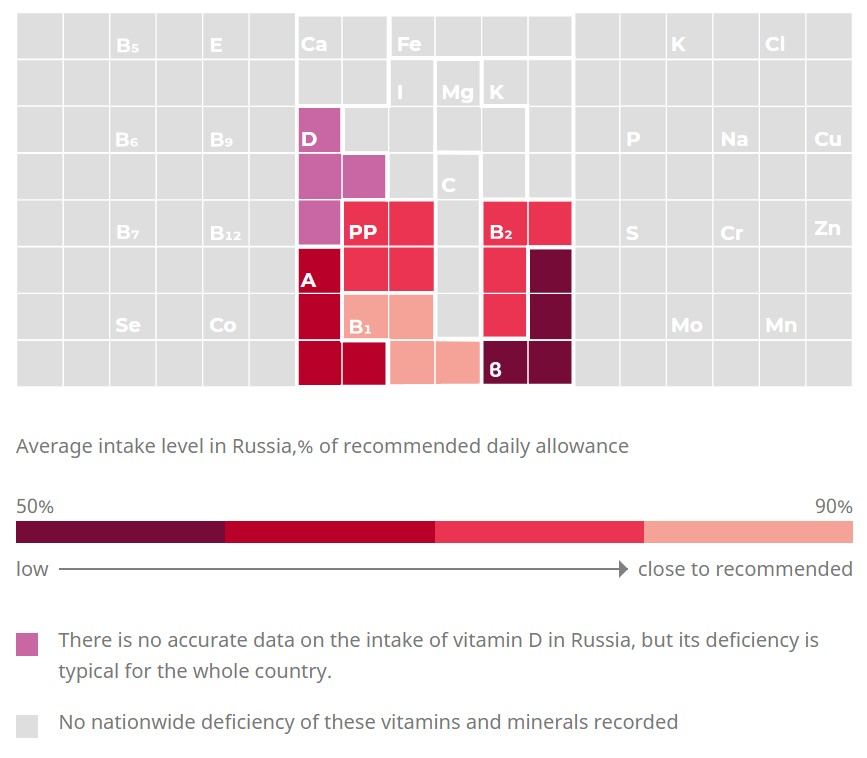
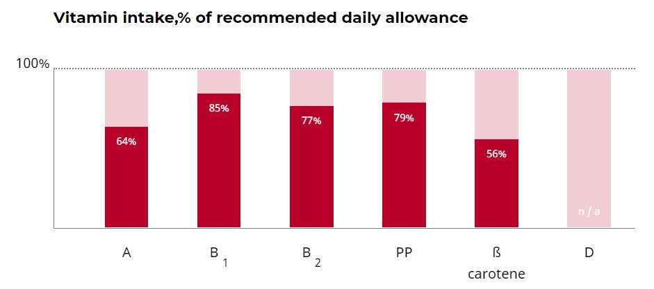
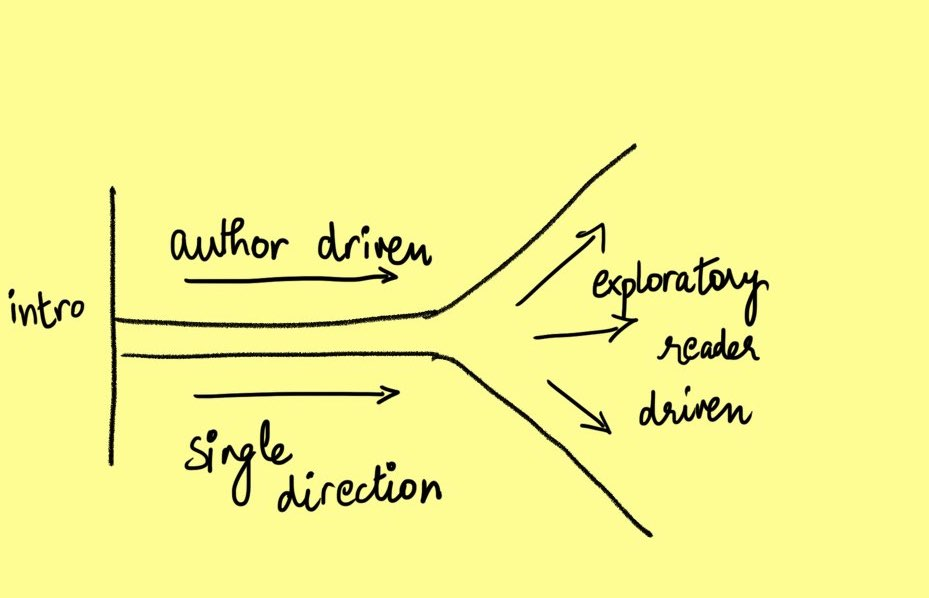
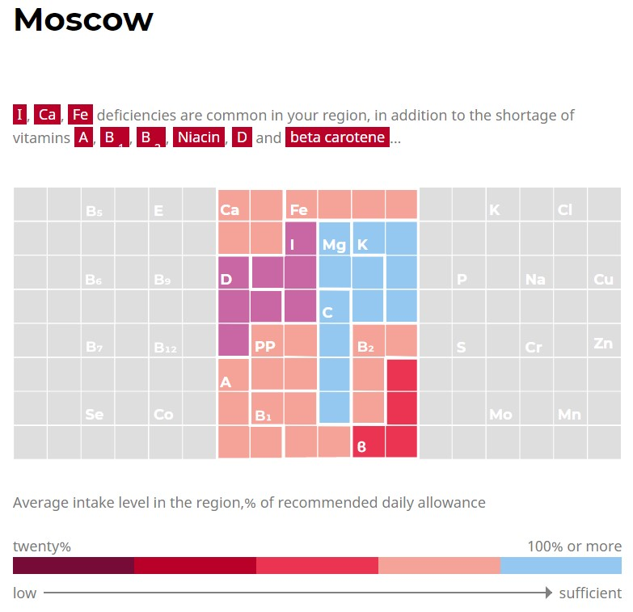
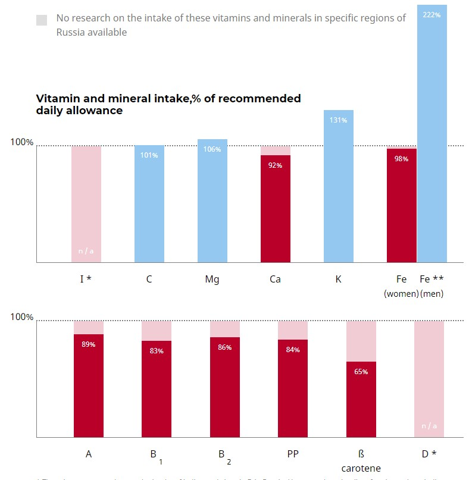
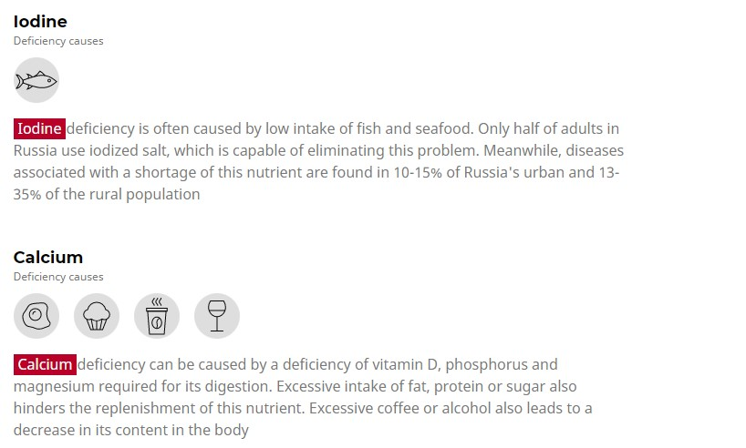
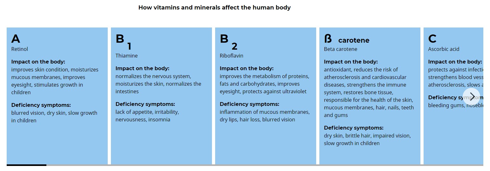
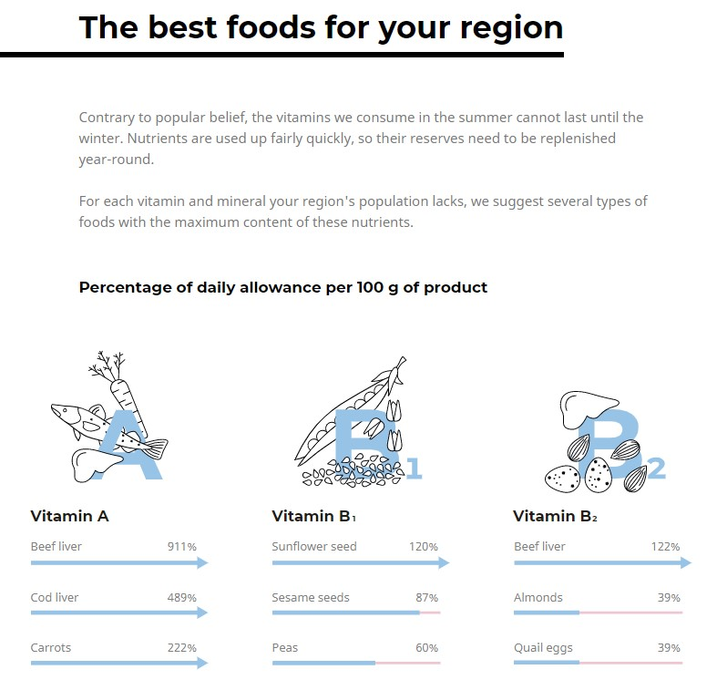
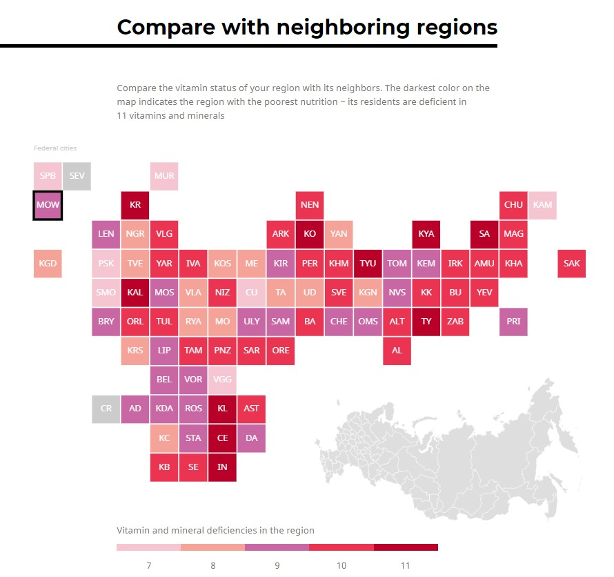
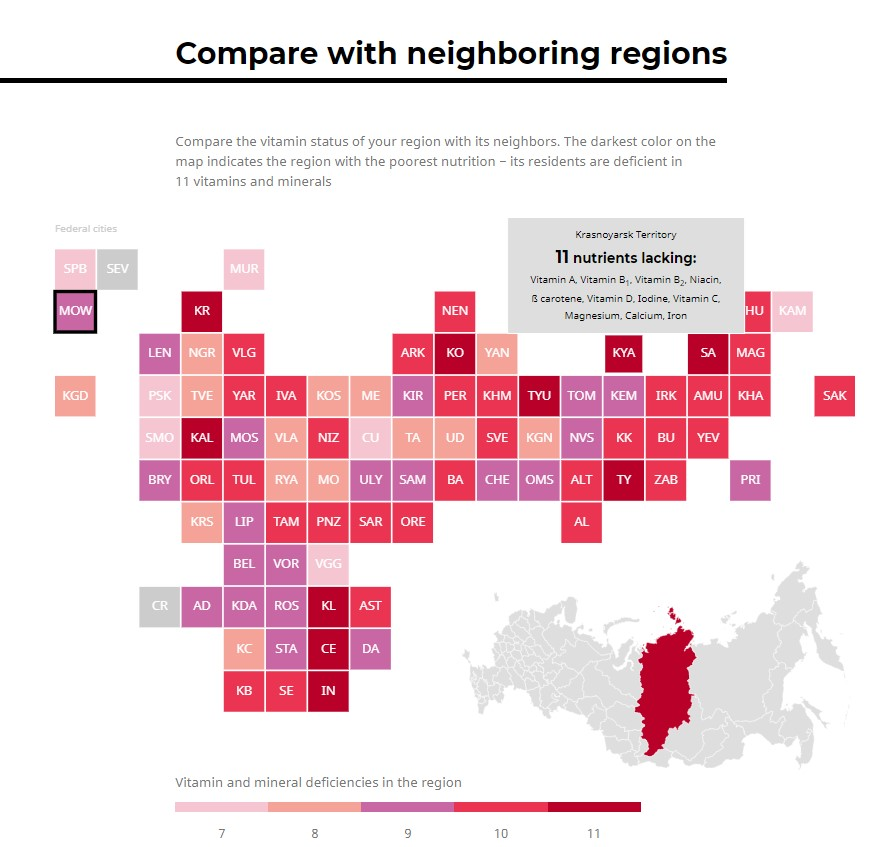

VITAMIN DEFICIENCY IN RUSSIA
Purpose of the viz
Objective - The visualization attempts to present the prevelant
vitamin and mineral defficiencies in different parts of Russia.
Goal - The goal is to educate the audience about the prevelant
deficiencies in their region and what food and dietary habits can help bridge the
gap.
Audience - The audience is mostly the residents of Russia and all the general
public who would be interested in exploring the vitamin deificiency scenario in the country
The information is presented in a very easy to understand format which reduces the cognitive
load of the readers and help them understand the situation.
The visualization is able to hold the viewers attention and present the idea very effectively.
The research is conducted by one of Russia's reputed research organisation and the article very
honestly states the inavailability of data wherever they are unable to provide the data.
The reader is also able to understand what kind of data is difficult to collect.
Visualization Design
Visual Encoding Patterns - The visualization uses the visual language of tetris blocks
to represent various vitamins, it is a metaphor to the vitamins being the building blocks of our body.

The visualisation uses colour coding to denote the level of deficiency in the population.
The same colour encoding has been used throught the article whic helps readers to align to the
information and there is a sense of continuity.

Simple visualizations have been used to explain the level of deficiency
There is a level of interactivity to the viz, the bars are annotated when
hovered over them adding to the ease of readability.
The author starts from the bigger picture and then letting the reader explore
more details as he reads on without getting into a lot of technicalities.
Interaction & Narrative Design
Narrative -
The narrative stype used in the project is the martini style.

The narrative style is - Explainatory
The author starts with the context, goes more into details of each of the
deficiencies, their causes and vitamin rich foods, further letting the readers
explore the conditions of their own reagion, if a reader does not choose a region,
the narrative takes an example of Moscow and presents data specific to Moscow. Later
the author leaves the stage open in the form of an exploratory map hovering over which
gives the situation of that particular region.
Interactivity -
In the first part of the visualization, interactivity is only used to annotate the charsts
on hovering which assists the reader to read the values. In second exploratory part of the
visualization, the reader is asked to choose the region they want to explore using a drop down
menu -
Step 1

Suggestion -
It will be easier for the reader to also have an option
to choose the region on a map as geographically location a region is much more intuitive than searching
for it in a drop down menu, having both the options will be able to help a larger audience.
The next view gives the reader an overview of the vitamin city of the status, coloured tetris blocks highling
the level of deficiency of each vitamin in that state.
View 1

After this the reader is given a more detailed version of the deficiency status to understand the picture in a
better way.On hovering the reader can see the values in absolute terms based on the requirement and the average
consumption of a particular vitamin in that region.
View 2

After this the author is given more information regarding the
causes of the deficiency and how it can be eliminated. The author also makes use of icons for faster communication.
View 3

The author further goes on to talk about how these deficiencies found in the region affect the
human body.
View 4

This view lets the reader to go through the cards if interested or the reader
can decide to skip this part and move on furher. The author then suggests the best foods to eat
for that region which help eliminate the prevelant deficiency.
View 5

It also mentions the level of which the daily requirement is met with every 100 grams
of that particular food. With this the author leaves the reader to explore beyond the
selected region and provides the opportunity to compare different regions.
Interactive View 6-1

Interactive View 6-2

On hovering